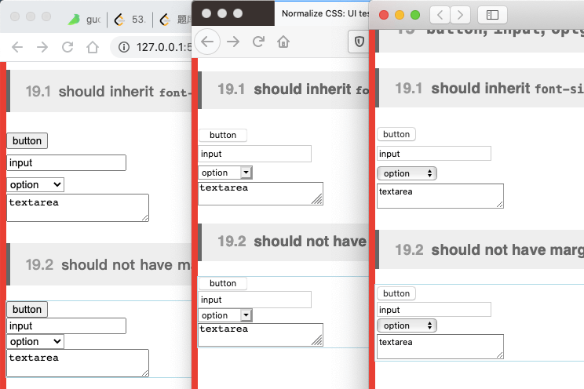
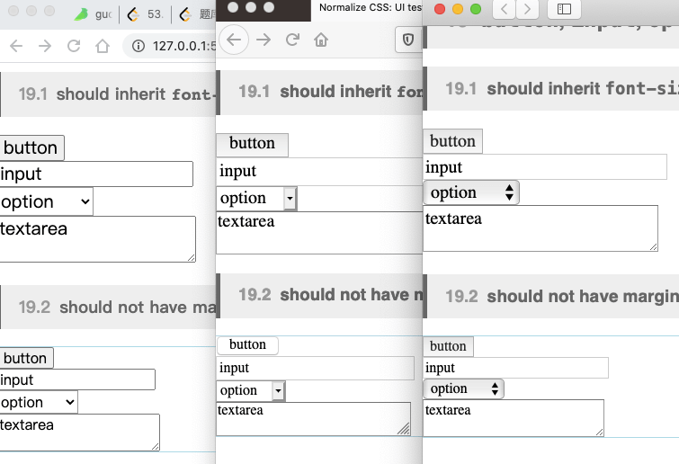

normalize.css浏览器样式差异抹平
这篇文章发布于 2020/10/31，归类于 CSS
标签：
浏览器样式差异抹平，normalize.css
normalize.css, A modern alternative to CSS resets 一个用于CSS重置的现代替代方法
主要用于解决不同浏览器默认样式之间的差异
What does it do?
- Preserves useful defaults, unlike many CSS resets. 保留有用的默认样式，重置许多不一样的CSS
- Normalizes styles for a wide range of elements. 为许多各种各样的元素标准化样式
- Corrects bugs and common browser inconsistencies. 修正bug和常见的浏览器不一致样式
- Improves usability with subtle modifications. 通细微的修改提高可用性
- Explains what code does using detailed comments. 使用详细的注释来解释代码的作用
下面来看看 Chrome、Safari、Firefox 三个浏览器之间的差异

使用 normalize.css 后的效果

现有的UI框架也抹平了这些差异